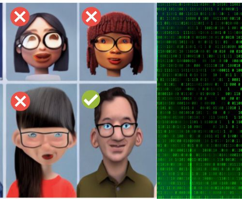

TAY, un ChatBOT d'extrema dreta
Quan es va llançar el març del 2016 a Twitter, Tay era un ChatBOT que havia estat dissenyat per mantenir converses amb persones, adoptant l'estil i el llenguatge d'una adolescent. Va ser un experiment que combinava aprenentatge automàtic, processament del llenguatge natural i xarxes socials. A diferència dels xatbots preprogramats, Tay aprenia amb el temps per aconseguir tenir converses sobre qualsevol tema. No obstant això, a les primeres hores després del llançament, Tay va començar a publicar missatges ofensius i abusius (racistes, antisemites, masclistes, etc.), provocant la suspensió del compte en menys de 16 hores. Aquest incident va mostrar els desafiaments d'integrar l'aprenentatge de la llengua en un context públic i com els trolls van explotar el bot per difondre continguts tòxics. Es va concloure que el disseny d'un sistema de comunicació en línia no és només un problema tècnic, sinó també social, requerint planificació i reflexió sobre el context, els valors humans i el tipus de comunicador que es vol crear.
Una IA que prefereix contractar homes abans de dones
 |
Amazon, líder en e-commerce, va desenvolupar una eina de contractació mitjançant intel·ligència artificial (IA) per automatitzar la cerca de talents. L'equip va entrenar models d'IA per revisar currículums de candidats i assignar puntuacions de l'1 al 5, similar a la manera com els compradors avaluen productes a Amazon. Tot i això, la IA va demostrar biaixos de gènere en preferir candidats mascles, ja que havia après de dades de candidats predominantment masculines. A més, penalitzava termes com "women's" i no tenia en compte graduats de col·legis per a dones. Encara que Amazon va editar el sistema per neutralitzar aquests biaixos, les màquines podrien crear altres formes discriminatòries. Font de l'Imatge Stable Diffusion transformat per Virgilio Gonzalo en Canva. |
L'equip va ser desmantellat el 2020 i Amazon no va confiar exclusivament en les recomanacions de la IA per contractar. Aquest incident reflecteix les limitacions de l'aprenentatge automàtic i l'impacte dels biaixos subtils.
La teva cara em sona
|
En un estudi del National Institute of Standards and Technology (NIST, EEUU), es va descobrir que la majoria dels algorismes de reconeixement facial presenten biaixos. Les tecnologies de reconeixement facial identifiquen de manera errònia cares de persones de raça negra i asiàtica fins a 100 vegades més sovint que les cares blanques, i també identifiquen de manera errònia dones més sovint que homes. Aquest biaix algorítmic té conseqüències importants a la vida real, ja que molts nivells d'aplicació de la llei i el servei de duana dels Estats Units utilitzen aquesta tecnologia. Aquesta pot prendre decisions sobre allotjament, ofertes de feina i altres aspectes importants de la vida. Les concordances errònies poden provocar pèrdues de vols, interrogatoris llargs, problemes amb la llista de persones vigilades, enfrontaments tensos amb la policia, detencions injustes i més. Imatge generada per Stable Diffusion per Virgilio Gonzalo. |
Si voleu saber més sobre el biaix de reconeixement facial, pot llegir AQUEST article que va escriure la Joy Buolamwini.
I ara què?
L'agost de 2023, un article cita un estudi recent que tracta sobre la tendència política expressada per ChatGPT i altres models de llenguatge pre-ChatGPT. L'estudi original sosté que ChatGPT expressa opinions liberals i està d'acord amb els demòcrates en la majoria dels casos. Per tal de comprendre millor aquesta afirmació, els autors de l'article van demanar a ChatGPT les seves opinions sobre 62 preguntes específiques, amb temes com ara l'apropiació cultural i l'alliberament animal. Els resultats mostren que ChatGPT no ofereix opinions amb claredat: en un 84% dels casos, no expressa una opinió i en un 8% dels casos respon directament. En comparació, GPT-3.5 no va expressar opinions en un 53% dels casos i va respondre directament en un 39% dels casos. No obstant això, els autors de l'estudi original no van provar amb ChatGPT sinó amb un model anomenat text-davinci-003, que no s'utilitza en l'entorn de ChatGPT.
Aquesta diferència pot ser explicada pel tipus de pregunta. Quan es pregunta directament a ChatGPT sobre les seves opinions polítiques, sovint es nega a opinar. Però si se l'obliga a triar una opció entre diverses opcions, expressa una opinió amb més freqüència. No obstant això, les respostes a preguntes d'opinió múltiple no són pràcticament significatives, ja que no reflecteixen com els usuaris interactuen amb els models de conversa en la vida real.
Cas d'estudi 4: Tendència de ChatGPT
Activitat grupal
3 hores
El juliol de l'any 2023 es van celebrar unes eleccions generals. Us Passem documentació sobre com es tracten sis dels grans temes polítics als programes electorals dels diferents partits majoritaris.
Rúbrica - Cas d'estudi 4
- Activitat
- Nom
- Data
- Puntuació
- Notes
- Reinicia
- Imprimeix
- Aplica
- Finestra nova
| Assoliment alt | Assoliment mitjà | Assoliment baix | |
|---|---|---|---|
| Estructura i organització | Estructura clara i lògica, amb una introducció, seccions ben definides i una conclusió. (1,5) | Estructura ordenada, amb seccions coherents i una conclusió adequada. (1) | Estructura adequada, però amb algunes mancances en la seqüència o organització. (0,5) |
| Creativitat i Disseny Visual | Disseny adequat amb algun element visual, però amb algunes oportunitats d'optimització. (1,5) | Disseny adequat amb algun element visual, però amb algunes oportunitats d'optimització. (1) | Disseny bàsic o manca de coherència visual, amb pocs elements destacats. (0,5) |
| Contingut i Profunditat de la presentació | Contingut exhaustiu, amb detalls, argumentació sòlida i exemples clars per il·lustrar els punts. (3) | Contingut adequat i suficient per cobrir l'essencial del cas amb alguns exemples. (2) | Contingut raonablement complet, però mancant d'alguns detalls o exemples clars. (1) |
| Fiabilitat del Contingut | Totes les afirmacions són precises, basades en proves i relacionades amb els temes polítics i l'experiment. (2.5) | La majoria d'afirmacions són precises i relacionades amb el tema, amb algunes mancances o errors menors. (1.75) | Algunes afirmacions manquen de precisió o rellevància amb el tema, o inclouen errors importants. (1.50) |